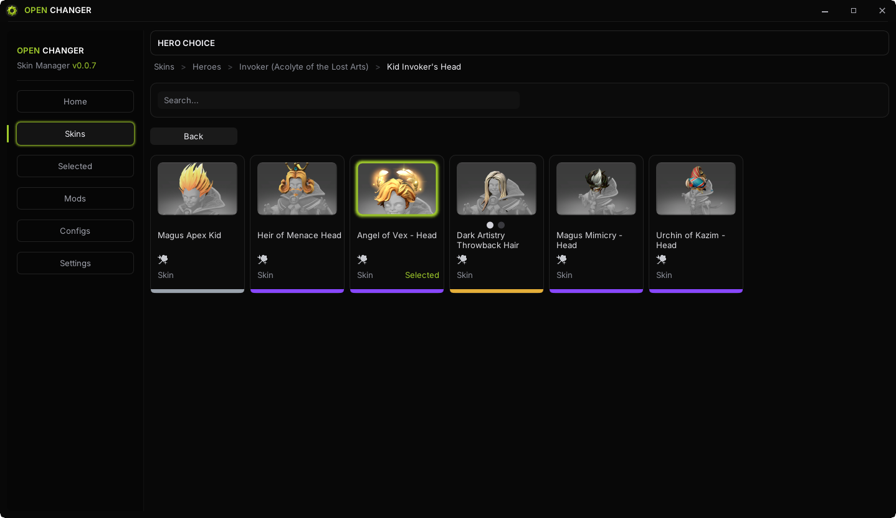
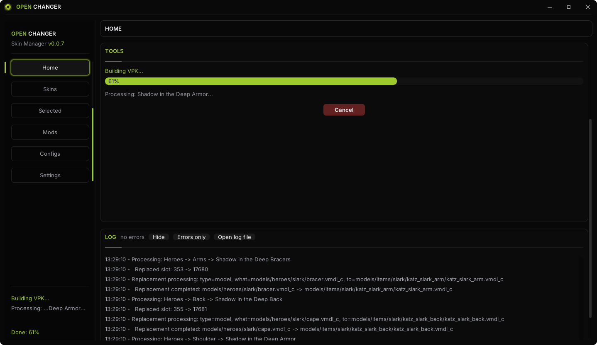

// гайд 2026
Как поменять скины в Dota 2 — гайд 2026
Весь процесс занимает около десяти минут и состоит из пяти шагов: скачать программу, выбрать скины, нажать Build, нажать Patch и запустить игру. Разберём каждый шаг подробно — с решением проблем, которые могут встретиться по пути.
Что понадобится
- Компьютер с Windows 10 или 11 (x64);
- Установленная Dota 2 (Steam);
- OpenChanger — бесплатный скинченжер с открытым кодом (ссылка ниже).
Ничего больше: ни входа в Steam, ни настройки окружения. Программа портативная — установщик не нужен.
Шаг 1. Скачайте и распакуйте OpenChanger
Скачайте архив OpenChanger-x64-Windows.zip со страницы релизов на GitHub и
распакуйте в любую папку. Внутри — готовый исполняемый файл: просто запустите его.
Шаг 2. Выберите скины
Откройте вкладку скинов и найдите то, что хочется надеть: поиск работает по имени героя, а фильтры — по редкости, от Arcana и Immortal до обычных предметов. Всего доступно 12 000+ скинов на всех 125 героев. Отмечайте галочками понравившиеся.

Шаг 3. Нажмите Build
Кнопка Build собирает из выбранных скинов отдельный пак. Это занимает несколько
секунд — программа подготавливает файлы, которые затем встанут в клиент.
Шаг 4. Нажмите Patch
Кнопка Patch подключает собранный пак к клиенту Dota 2. На этом этапе программа
модифицирует игровые файлы — поэтому антивирус может спросить подтверждение (подробнее в FAQ ниже).

Шаг 5. Запустите Dota 2
Всё. Запустите игру обычным способом — выбранные скины уже на героях. Видите их только вы: остальные игроки видят стандартные модели, а ваш инвентарь и аккаунт не меняются.
Да. Методу локальной VPK-замены около девяти лет, и за это время задокументированных банов не было. Как это устроено технически — в отдельном гайде «Что такое скинченжер и безопасно ли».
Как вернуть стандартные скины
Надоело или нужно вернуть всё как было — отключите скины в OpenChanger и нажмите
Restore. Программа восстановит оригинальные файлы клиента, и Dota 2 снова
будет выглядеть штатно.
Если что-то пошло не так
Антивирус блокирует запуск
Скинченжер модифицирует файлы игры, поэтому некоторые антивирусы относят его к классу HackTool и ругаются. Это ложное срабатывание: добавьте программу в исключения. Исходный код открыт на GitHub — можно проверить каждую строчку.
Скины не появились в игре
Убедитесь, что после Build вы нажали Patch, а Dota 2 была запущена
уже после патча. Если игра работала в этот момент — перезапустите её.
После обновления Dota 2 всё слетело
Крупные патчи игры перезаписывают клиент. Скачайте свежую версию OpenChanger — обновления выходят в считанные дни после патчей — и повторите Build и Patch.
Частые вопросы
Сколько стоит поменять скины в Dota 2?
Ноль рублей. OpenChanger полностью бесплатен: нет подписок, премиум-версий и рекламы. Скачиваете с официальной страницы релизов на GitHub и пользуетесь.
Скины остаются после перезапуска игры?
Да. Запатченный клиент сохраняет скины до тех пор, пока вы не отключите их. После крупных обновлений Dota 2 может потребоваться обновить OpenChanger и повторить Build и Patch.
Антивирус ругается на программу — это вирус?
Скинченжеры модифицируют файлы игры, поэтому некоторые антивирусы относят их к классу HackTool и показывают предупреждение — это ложное срабатывание, а не вирус. Исходный код OpenChanger открыт: каждый может проверить, что именно делает программа.
Как вернуть стандартные скины?
Отключите скины в OpenChanger и нажмите Restore — программа вернёт оригинальные файлы клиента. Dota 2 снова будет выглядеть так, как раньше.
Это работает после обновлений Dota 2?
Да. Обновления OpenChanger выходят вслед за крупными патчами Dota 2 — обычно в считанные дни. Если после патча игры скины слетели, скачайте свежую версию программы.
Готовы поменять скины?
Скачайте OpenChanger — и через десять минут вы в матче с любой арканой. Бесплатно, без установки, Windows 10/11.
Скачать OpenChanger бесплатно